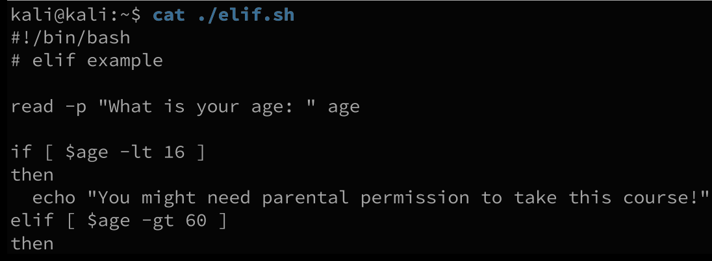

kali
bash脚本
介绍
Bash脚本是纯文本文件，其中包含一系列命令，这些命令的执行就像在终端提示符下键入的一样。 通常，Bash脚本具有.sh的可选扩展名（为了便于识别），以＃！/ bin / bash开头，并且必须具有可执行权限才能执行。
helloworld
./表示法似乎令人困惑，但这只是一个路径表示法，指示该脚本在当前目录中。 每当我们键入命令时，Bash都会尝试在存储在名为PATH的变量中的一系列目录中找到它。 由于我们的主目录没有包含在该变量中，我们必须使用相对于我们的Bash脚本的相对路径，以便Bash“找到它”并运行它。
变量
声明变量
注意=前后没有空格，变量会区分大小写
引用变量
使用$符号引用变量
声明复杂变量
如果要将带有空格的变量进行赋值，直接赋值会报错
若要定义带空格的变量值，需要是使用''或""将变量值括起来
Bash对待单引号和双引号的方式有所不同。当遇到单引号时，Bash会逐字解释每个封闭的字符。 用引号引起来，所有字符都按字面意义查看，但“ $”，“`”和“ \”除外，这意味着变量将在所附文本的初始替换过程中扩展。
单引号会将其内内容全部解析为单个字符，双引号会保留$`\三个符号的实际含义
在此示例中，单引号引起的问候声明准确地保留了文本的值，并且没有将空格解释为命令定界符。 但是，在双引号封闭的greeting2声明中，Bash将$ greeting扩展为它的值（“ Hello World”），以尊重“ $”字符的特殊含义。
将程序执行结果声明为变量
使用=$()
使用=`` 不建议使用这种，与前面对变量解析的方法不同，且版本较老
子shell中的变量替换不会影响主shell中的变量值
命令替换发生在子shell中，并且对子shell中的变量所做的更改不会更改主命令中的变量 处理
参数
bash中使用$1 $2分别代表第一个和第二个参数
脚本中固定的有其他含义的变量名
获取用户输入
使用read将用户输入赋值到answer变量中
-p（允许我们指定提示）和-s（使用户输入保持静音）。 后者是捕获用户凭据的理想选择：
条件判断
if
[]中可以使用的条件判断指令
if-else
if-elif-else

布尔逻辑运算
&&（与运算）
使用grep搜索kali是否在passwd文件中，只有存在，才会执行&&后面的指令，否则不执行
可以用在if判断中
||（或运算）
只有||之前的指令执行失败，才会执行||之后的指令
同样可以用在if判断中
循环
for
使用范围的括号扩展被写入，给出范围的第一个和最后一个值，并且可以是数字或字符的序列。 这称为“序列表达式”：
while
此时判断条件为-lt即小于，则只能输出1-9，如果想要输出1-10，则需要使用判断条件-le
（（counter ++））行使用双括号（（）)构造同时执行算术扩展和求值。 在这种特殊情况下，我们使用它来将我们的计数器变量增加一
函数
函数的格式
bash格式
c语言格式
helloworld
带参函数
函数参数使用bash的表示方法
函数定义（pass_arg（））包含括号。 在其他编程语言（例如C）中，这些将包含预期的参数，但是在Bash中，括号仅用作修饰。 他们从未使用过。 还要注意，函数定义（函数本身）必须在调用之前出现在脚本中。 从逻辑上讲，我们无法调用未定义的内容。
函数返回值
此时之所以可以返回数据是因为$RANDOM是一个全局变量，并将该全局变量转换为了$?
Bash函数实际上不允许您返回传统意义上的任意值。 取而代之的是，Bash函数可以返回退出状态（成功时为零，失败时为非零）或其他一些任意值，以后我们可以从$?全局变量中访问它们。 或者，我们可以在函数内部设置全局变量，或使用命令替换来模拟传统返回。
我们返回了特殊的全局变量$ RANDOM（转换为$？）。 如果我们使用不带$ RANDOM参数的return语句，则将返回函数的退出状态（在本例中为0）。
全局变量与局部变量
默认情况下，变量具有全局作用域，这意味着可以在整个脚本中对其进行访问。 相反，局部变量只能在定义它的函数，代码块或子外壳中看到。 我们可以通过在声明之前加上local关键字来“覆盖”全局变量，为其提供局部上下文，而保持全局变量不变。 通用语法为：
更改与全局变量同名的局部变量的值不会影响其全局值。 在函数内部更改全局变量的值（而无需声明具有相同名称的局部变量）将影响其全局值。
bash脚本编程实例1
查找megacorpone.com主网页上列出的所有子域，并找到其对应的IP地址。
获得指定域名的所有子域名
使用wget下载网站首页文件index.html
使用grep“ href =”提取index.html中包含HTML链接的所有行：
使用grep抓取包含“ .megacorpone”的行（表示存在子域），使用grep -v剥离包含我们已经知道的无聊“ www.megacorpone.com”域的行：
grep -v用于过滤不包含指定文本的所有行
以上结果的基础上，使用"http://"对每行数据进行分割，打印分割结果的第二部分
使用'/'对字符串进行分割，仅显示子域名信息
以上效果可以使用正则表达式简单获得
grep -o该选项仅返回在正则表达式中定义的字符串
（'[^ /] * \.megacorpone \ .com'）使用单引号括起来，所以该字符串将不允许变量扩展，并且将按字面意义处理所有封闭的字符。
表达式（[^ /] *）中的第一个块是一个否定的集（^表示否定）（[]表示集），它搜索不包括正斜杠的任意数量的字符（*）。 请注意，句号以反斜杠（\.）进行转义，以加强我们在寻找文字周期的信息。 接下来，字符串必须以“ .megacorpone.com”结尾。 当grep找到匹配的字符串时，它将从行中分割出该字符串并将其返回。
grep -o '[^/]*\.megacorpone\.com' index.html | sort -u > list.txt
获得每个子域名对应的ip地址
循环+host指令，从而获得子域名对应ip
筛选出存在ip地址的程序，仅将ip地址筛选出来
bash脚本编程实例2
需要利用windows上的一个漏洞，该漏洞名称包括afd字符，则需要在https://www.exploit-db.com中搜索“ afd windows”，下载符合我们搜索条件的漏洞利用程序，并对其进行检查，直到找到合适的漏洞利用程序为止。
SearchSploit是Exploit-DB的命令行搜索工具，它使我们无论身在何处都可以随身携带Exploit数据库的脱机副本。 我们将“ afd windows”作为搜索字符串传递，使用-w返回https://www.exploitdb.com的URL而不是本地路径，并使用-t搜索漏洞利用标题：
使用grep和cut仅显示exp的url
下载漏洞的原始利用代码
在exploit-db界面中找到原始漏洞利用代码
for循环遍历之前得到的exp下载链接，循环中exp_name将exp下载链接中的漏洞序号作为exp名称，url将exp下载链接中的exploit替换为raw，从而下载原始漏洞利用程序，最后使用wget下载，并将下载结果名称保存为exp_name
wget的参数表示在没有证书检查的安静模式下进行下载
下载完成后
通过file命令确定对应exp文件已经下载完毕
查看exp
使用脚本完成以上功能
#!/bin/bash # Bash script to search for a given exploit and download all matches. for e in $(searchsploit afd windows -w -t | grep http | cut -f 2 -d "|") do exp_name=$(echo $e | cut -d "/" -f 5) url=$(echo $e | sed 's/exploits/raw/') wget -q --no-check-certificate $url -O $exp_name done
之后需要在测试机中测试exp，然后再使用exp攻击目标主机
bash脚本编程实例3
假设我们的任务是扫描C类子网以识别Web服务器并确定它们是否呈现出有趣的攻击面。 端口扫描是检查远程计算机上的TCP或UDP端口的过程，目的是检测目标上正在运行的服务以及可能存在的攻击媒介.
创建临时文件夹
使用nmap进行扫描
-A用于主动扫描，-p用于指定端口或端口范围，-open用于仅返回具有打开端口的计算机，而-oG以可伸缩格式保存扫描结果，后面给扫描结果文件名
查看扫描结果文件
仅显示开放80端口的ip地址，并且不显示第一行无用数据
使用空格作为分割依据，仅显示开放了80端口的IP地址
使用已有ip循环调用cutycapt，用于将网站页面转为图片
cutycapt：使用–url指定目标网站，并使用–out指定输出文件的名称：
查看下载的网站图片
使用脚本将下载的图片插入到网页中，然后打开网页显示图片
该脚本从最基本的标记开始构建一个HTML文件（web.html）。 然后，ls和awk语句将每个.PNG文件名插入HTML IMG标记中，并将其附加到我们的web.html文件中。最后，我们将HTML结束标记附加到文件中，使脚本可执行，然后在浏览器中查看它。 结果很简单，但很有效，使我们可以查看每个Web服务器的主页：